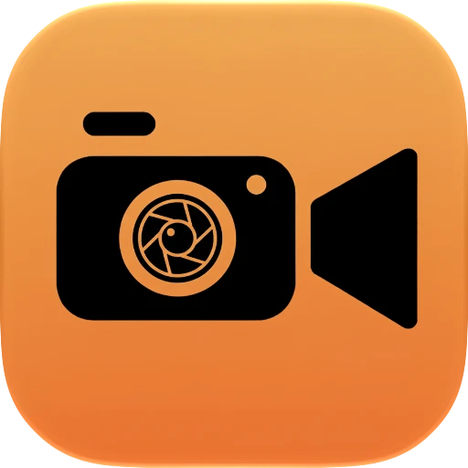
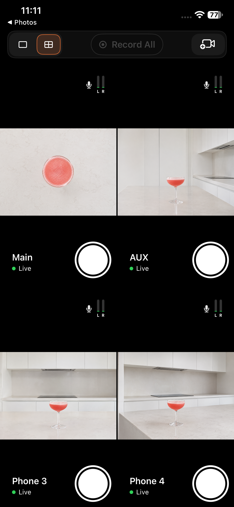
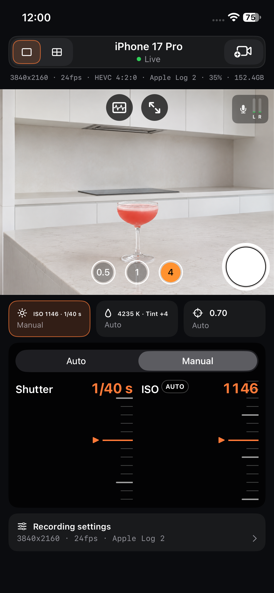
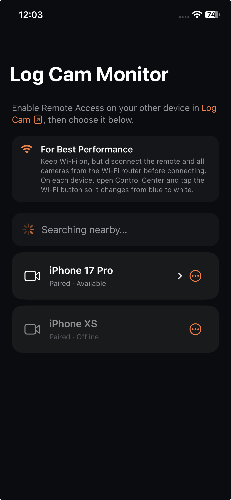

RAW Cam
For filmmakers who want the sensor data and the widest latitude in post. Record open-gate RAW video with precise manual control.
DNGMCRAWOpen GateExternal storage
View RAW Cam
Official apps by Lead The Way, vl. Sebastijan Grabar
A focused camera system for iPhone: shoot RAW with RAW Cam, record production-ready Log video with Log Cam, and monitor every angle wirelessly.

DNG and MCRAW capture
HEVC and ProRes from RAW frames
Wireless preview and control
The camera system
RAW Cam and Log Cam are the cameras. Log Cam Monitor is the free companion that allows you to monitor Log Cam wirelessly.
For filmmakers who want the sensor data and the widest latitude in post. Record open-gate RAW video with precise manual control.
For a faster path from camera to edit. Record HEVC or ProRes from RAW frames with Log gammas and professional monitoring tools.
Preview and control one to four Log Cam recording iPhones from another iPhone, iPad, or Mac.
Built to record
Choose the capture path that fits your production. Both apps keep the interface direct.
Maximum flexibility
Capture sensor data for grading, VFX, and finishing workflows where image latitude matters more than file size.
Ready for the edit
Record compact or edit-ready video from RAW frames with color and exposure tools designed for production.

Monitor & control
Stay behind the monitor while the recording iPhones stay exactly where you put them.
Adjust exposure, white balance, focus, lenses, Log gamma, and recording settings. Start or stop without touching the camera.
Follow multiple angles, record cameras individually, or start every connected camera with Record All.
The same monitoring and control experience across all three platforms, including while Log Cam is already recording.
The interface
Live information, direct controls, and no unnecessary layers between you and the shot.


Good to know
Monitor is a remote view and control surface. The recording iPhone remains the camera and recorder.
Choose your camera
Start with RAW Cam or Log Cam. Add the free Log Cam Monitor when your camera needs to work away from you.